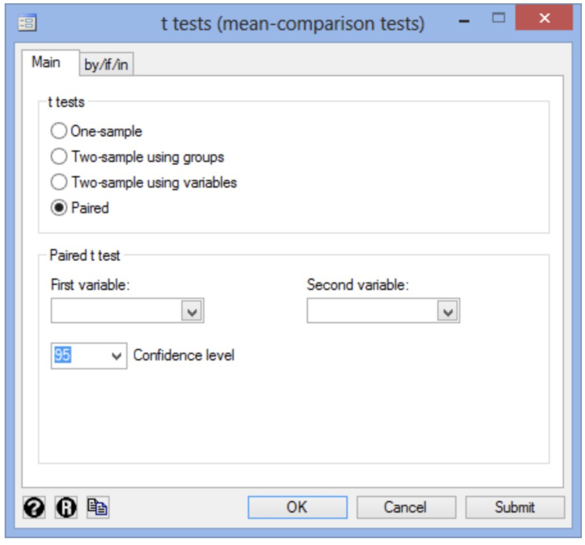

Dependent T-Test
short: tests for difference between two related variables
Introduction
The dependent t-test (also called the paired-samples t-test or paired t-test) is a statistical procedure used to compare the means between two related groups based on the same continuous dependent variable. Specifically the test is used to determine whether the mean difference between two sets of observations is zero. Before-and-after observations on the same subjects are suitable for this test. For instant you could analyse the difference in managers' salaries before and after undertaking a PhD. Your dependent variable would be 'salary' and your two related groups would be two different 'time points' that is the salary 'before' and 'after' undertaking the PhD. But also the comparison of two methods of measurement or two different treatments where the measurements/treatments are applied to the same subject (i.e. the use of a stethoscope and a dynamap for a blood pressure measurement).
Assumptions
In the following you can see the four assumptions you must meet in order for a dependent t-test to give your data a valid result.
- Assumption: The dependent variable should be continuous. Such as height, temperature, salary, revision time, intelligence (measured in using IQ score), reaction time, test, sales etc.. are measurable at the interval or ratio level. For me help you can see more Types of Variables here statistic.laerd.com
- Assumption: The independent variable should consists of two categorial, 'related groups' or 'matched pairs'. That means the same subjects must be present in both groups because the subject has been measured on two occasions on the same dependent variable.
For example: the dependent variable – 50 participants doing type speed using a keyboard two 'related groups' of independent variable – 'before' and 'after' the touch-typing course. These groups are relates because they were measured at theses two time points. - Assumption: There should not be a an outlier in the difference between the two related groups which means that an outlier is a single data point within your data that does not follow the usual pattern. These outliers can have a negative impact on the paired t-test and reduce the accuracy of the final result.
- Assumption: The distribution of the differences in the dependent variable between the two related groups should be approximately normally distributed. We talk about the paired t-test only requiring approximately normal data because it is quite "robust" to violations of normality, meaning that the assumption can be a little violated and still provide valid results.
Example
To explain you the use of a Paired T-test we gonna take the example of laerd.com
In the example of laerd.com a company researcher tests a new formula for a sports drink. Compared to the regular "carbohydrate-only" drink the new formula with "carbohydrate-protein" drink should change the running performance positively. The question for this case is wether this new sports drink does make a change in running performance compared to the "carbohydrate-only" drink.
We choose 'formula' as independent variable and 'running performance' as the dependent variable . Now we have two related groups: "carbohydrate-protein" and "carbohydrate-only".
20 middle distance runners participated in this experiment where they had to run as far as possible for 2 hours on a treadmill. Each of them had performed two trials. In one trial the runners needed to drink the bottle with carbohydrate-only formula and in the other the bottle with x carbohydrateprotein formula.
The goal is to show whether significant difference in distance run between the two trials exists or not (i.e., when using the carbohydrate-protein drink compared to the carbohydrate-only drink).
Setup in Stata
In order to use stata follow the site below to download/purchase stata:
https://www.stata.com/order/download-details/
- Create two variables: (1) carb = the distance run in km un 2 hours for the carbohydrate-only (2) carb_protein = the distance run in km un 2 hours for the carbohydrate-protein
-
Enter the scores for the dependent variable, Distance run, into the two columns of the Data Editor(Edit) . One column for carb and the other for carb_protein
-
Test the procedure in Stata:
If in the previous section the Assumptions have not been violated. We gonna cary out the test using Stata's graphical user interface(GUI).
In Stata Version 13 all you need to do is click Statistics > Summaries, tables, and tests > Classical tests of hypotheses > t test (mean comparison test) on the top menu, as shown below.
You will see the t tests(mean-comparison tests) dialogue box:
Select the Paired option in the -t-tests-:

Select carb_protein from within the First variable in the -Paired t-test- area : drop down box.
Select carb from within the Second variable: drop down box.
In this example keep the default 95% confidence interval by keeping 95 value in the Confidence level drop-down box.
Now click enter.
Note: the variables mean two 'related groups'
Output

The output provides useful information for the research including the mean and standard deviation
and the actual results from the paired t-test. Take a look at the Mean column: You see those
people who used the nicotine patches had lower cigarette consumptions at the end of the
experiment compared to those who received the placebo. There is a mean difference between the
two trials of 0.1355 km (Mean) with a standard deviation of 0.09539 km (Std. Dev.), a standard
error of the mean of 0.02133 km (Std. Err.), and 95% confidence intervals of 0.09085 to 0.18015
km (95% Conf. interval).
You are presented with an obtained t -value (t) of 6.3524, the degrees of freedom (degrees of freedom), which are 19, and the statistical significance (2-tailed p-value) of the paired t-test (Pr(|T| > |t|)
under Ha: mean(diff) != 0), which is 0.0000. As the p-value is less than 0.05 (i.e., p < .05), it
can be concluded that there is a statistically significant difference between our two variable scores
(carb and carb_protein). In other words, the difference between the two run distances is not equal to zero.
Report the Output
Here aa few things you should include into your interpretation:
- An introduction to the analysis you carried out
- The observed t-value, 95% confidence intervals, degrees of freedom, and significance level (or more specifically, the 2-tailed p-value)
- The information about your sample, including how many participants there were in your sample
- The mean and standard deviation for your two related groups
The researcher conducted a paired t-test with a sample of 20 middle distance runners to determine whether there was a significant mean difference between the distance ran when the runners drank the carbohydrate-protein drink compared to the carbohydrate-only drink. The participants ran further with the carbohydrate-protein drink (11.17 ± 0.71 km') than with carbohydrate-only drink (11.17 ± 0.73 km); that's a statistically increas of 0.1355 (95% CI, 0.0909 to 0.1802) km, t(19) = 6.352,p< .0005, d= 1.42.
Sources
https://statistics.laerd.com/stata-tutorials/paired-t-test-using-stata.php#code
http://www.statstutor.ac.uk/resources/uploaded/paired-t-test.pdf
https://blog.minitab.com/blog/adventures-in-statistics-2/understanding-t-tests-1-sample-2-sample-and-paired-t-tests
https://libguides.library.kent.edu/SPSS/PairedSamplestTest
https://pythonfordatascience.org/paired-samples-t-test-python/#test